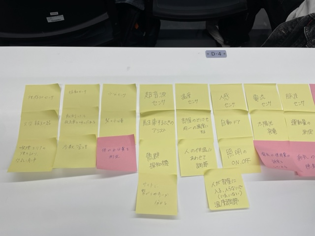

第3回
Iotについて
1.データを集めることでできること

- 煙感知センサ・・・火災報知器、禁煙エリアの煙測定→空気洗浄
- 振動センサ・・・転倒したら救急車を呼んでくれる、歩数管理
- 水分センサ・・・髪の水分量、身体の水分量測定
- 超音波センサ・・・駐車アシスト、魚群探知機、サイトへの繋がりやすさ
- 温度センサ・・・部屋のどこでも均一の温度に、人の体温に合わせて調整
- 人感センサ・・・自動ドア、照明のon,off
- 電流センサ・・・太陽光発電、電気の使用量の調節
- 脈波センサ・・・運動量の測定、病気の検査
- GPS・・・位置情報、落とし物発見
- 光センサ・・・外の明るさに合わせて照明調整、日が昇るとカーテンが開く
- 磁気センサ・・・金属探知機、マップ
- ガスセンサ・・・ガス漏れ予知、空気中の有毒ガスの有無
- 圧力センサ・・・体重計、血圧計
2.髪の水分量→トリートメント
美容院で使う機械を想定した。
まずお客さんの髪の毛の水分量を測定し、一人ひとりにあった調合のトリートメントが出て来てくれるというシステムだ。
これを他のお友達と交流したところ、大きな機械ではなくてもミニバージョンで自分に合ったトリートメントや
ハンドクリームを出してくれるものも作れそう！！というコメントをもらって確かに！と思った。